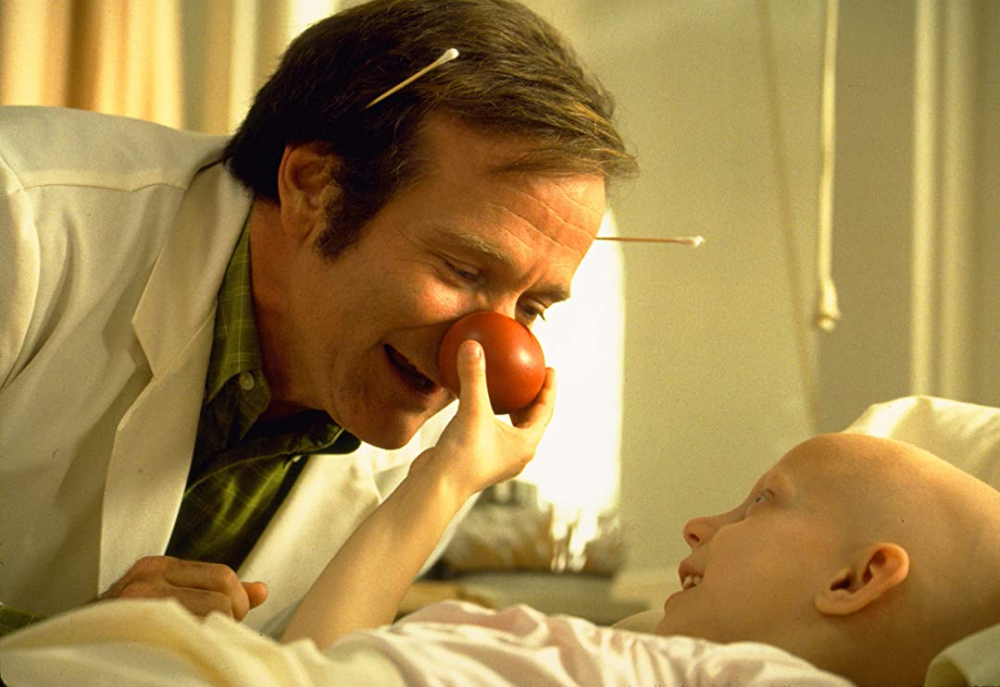

Are Clowns Scary?
Clowns are Great
But past the colours and the bright makeup, the clown is always shown to be human through and through. The low class Auguste is always smiling, Red Skelton's Dodo the Clown is prone to vices (as is Krusty in Springfield), and Pagliacci is capable of terrible things for love. The clown is able to make us confront what makes us fallible as humans, and tries to make us laugh at it. The clown is a caring creature, trying to help us look at ourselves less seriously, and find some fun in our own plight. And that is not something everyone can do. And so the clown is feared and shunned, relegated to the sewers, when they should be embraced and welcomed into our hearts.
Top Clowns
- Patch Adams
- Grock, the King of Clowns
- Jean-Gaspard Deburau (Pierrot)
- Weary Willie (Emmet Kelly)
- Buster Keaton
- Krusty the Clown
Clowns are NOT great!
Today I will share with you why I do not support clowns.
You see, ever since the dawn of clown time, these menacing creatures
have been scaring the socks off of small children and adults with
common sense. I present to you exhibit A:
Allow me to further explain..
These terrifying beasts have involved themselves in many aspects of
lives. They show up to birthday parties, they star in movies, heck, they've
even invaded our children's toys! Oh, the humanity! The question we are
forced to ask is this: Are we safe walking amongst clowns?!
As if you need any more convincing!
At this point you must be on my side!
However, if not, this last bit will surely change your mind.
I will now present to you 3 very iconic, exceptionally frightening clowns.
THE CLOWN FROM ROB ZOMBIE'S '31'
SPIKE FROM 'KILLER KLOWNS FROM OUTER SPACE'
PENNYWISE FROM 'IT'